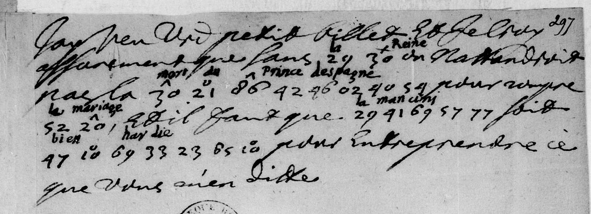
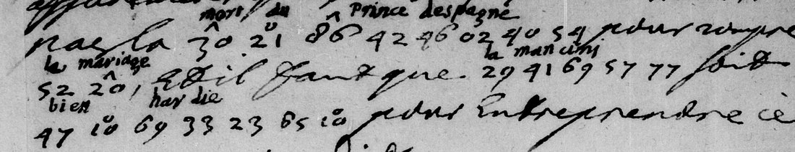

At a glanceExisting decipherment · complete
- The note
- Pierre Des Noyers, secretary to Queen Louise-Marie of Poland, to Ismaël Boulliau in Paris. A slip of six short lines, undated and unsigned, mounted in a volume of Des Noyers’s letters among those of December 1659. Plain French with five phrases in cipher.
- Where
- Bibliothèque nationale de France, Français 13020, f. 297 (Gallica view 608 of btv1b9061314b). Not in the catalogue and not on DECODE.
- The cipher
- A numerical nomenclator: two-digit groups from 00 to 99 that stand for letters, syllables or whole words, some with a small mark written above the number.
- Where the text comes from
- It was not deciphered here. Another hand, probably Boulliau’s, wrote the clear word above every group, and that gloss is the reading. The key in
key.tsvis a table rebuilt from the glossed passages of the same volume (adjacent glossed plaintext); it supports 8 of the 12 cipher words independently and the other 4 rest on the gloss alone. It is not the 1656 sign key of f. 315. - What it says
- That but for the Queen nobody would wait for the death of the Prince of Spain to break off the marriage, and that la Mancini must be very bold to try what Boulliau reports of her.
- Still open
- Which Queen and which Mancini the note means; the attribution of the gloss to Boulliau; a small ring that may be a mark or a raised zero; the table’s consistency figures, which were not recomputed here. No palaeographer has checked the transcription.
- Credit
- Brice Dudout (pull request #263) transcribed the cipher and the gloss, rebuilt the nomenclator and wrote the English translation. The contemporary glossator, probably Boulliau, deciphered the note in 1659. This page compares his transcription with the image and records what is and is not checked.
01 The note

The slip is mounted on a leaf numbered 297. It is bound among the letters of December 1659 in a volume of Des Noyers’s letters to Boulliau, after the letter headed Danzig, 20 December 1659. The note itself has no date, place or signature, so “Danzig, December 1659” is its place in the volume, not something it says. The printed edition of 1859 heads the letters of 13, 20 and 27 December 1659 Danzig.
Pierre Des Noyers (1608–1693) was secretary to Queen Louise-Marie of Poland; Ismaël Boulliau (1605–1694) was an astronomer and scholar in Paris and Des Noyers’s regular correspondent. The note answers a “petit billet” of Boulliau’s, which is not on the slip.

02 The cipher and its key
The groups are two-digit numbers. Some carry a mark written above the number (a small ring, a circumflex, a cross, a bar or an accent). A group may stand for a letter or a syllable (29 la, 42 de, 46 s, 52 le, 69 n, 23 r) or, with a mark, for a whole word (30+ Reine, 86ˆ Prince, 29+ Roy, 00− France). The same group can be spelt more than one way: 10° reads e in hardie and ie in bien.
The key is a table, key.tsv, that Brice Dudout rebuilt from the cipher and gloss pairs of twelve glossed passages of Français 13020 written between September 1658 and December 1659, this note among them. It holds 88 distinct groups with the values they were glossed with. By his count 450 of 507 group occurrences (88.8%) carry the group’s most frequent value, and 105 of 108 code words (97.2%); 200 shuffled controls stay at 34% or below. This is a key rebuilt from adjacent glossed plaintext, in the project’s terms; the passages are in French (1658) and Italian (1659) and the same table serves both.
It is not the sign key of 1656 on f. 315 of the same volume. That key is an alphabet of drawn symbols with a nomenclator of groups 3–39. Tested on the glossed passages it gives no trace of its alphabet and 0 agreements in 41 groups 3–39 (200 permuted controls, mean 0.001): a different table. The 1656 key is not used for this note.
What was checked here: every one of the 24 values used for this note is a value that key.tsv holds for its group, and each agrees with the gloss. What was not: the other eleven passages’ transcriptions are not in the repository, so the 88.8% and 97.2% are the contributor’s figures and were not recomputed, and the grades below (certain, probable, restored) come from his leave-one-out run, in which this note is left out of the table.
03 The reading
The note reads as one French sentence, in the spelling of the time. The words that come from the cipher are in italics.
J’ay veu vostre petit billet et je croy asseurement que sans la Reine on n’attendroit pas la mort du Prince despagne pour rompre le mariage, et il faut que la Mancini soit bien ardie pour entreprendre ce que vous m’en dittes.
In English: I have seen your little note, and I certainly believe that, but for the Queen, they would not wait for the death of the Prince of Spain to break off the marriage; and la Mancini must be very bold to undertake what you tell me of her.
The cipher part is 24 groups and 12 words. All 12 are given by the gloss. Measured against the table rebuilt from the other glossed passages, 6 are certain (the value occurs at least twice elsewhere and agrees: la, Reine, Prince, le, la, ardie), 2 are probable (despagne, where 40 = g occurs once elsewhere; Mancini, where 77 = ni occurs once elsewhere) and 4 are restored, because the group occurs nowhere else in the volume and its value comes from the gloss alone: mort (30ˆ), du (21°), mariage (20ˆ°) and the b of bien (47). None is unread. The gloss writes hardie; the cipher spells the word without its h, 33 a 23 r 65 di 10° e.
The figure below decodes the 24 groups with the table and sets them in the plain text. Pale values are the probable and restored ones.
The sense is the contributor’s reading of the context, and the note does not support it by itself. The Peace of the Pyrenees of 7 November 1659 provided for the marriage of Louis XIV and the Infanta Maria Theresa, and Philip IV’s only living son was then an infant, Philip Prosper (1657–1661), whose death would have made the Infanta heiress. On that reading la Reine is Anne of Austria, the king’s mother, and la Mancini is Marie Mancini, Mazarin’s niece. The note names neither: in the glossed passages of 1658 the same group 30+ stands for the Queen of Poland, the Queen Des Noyers served (so the contributor’s notes say), and which Queen is meant here is a judgment, not a measurement. The page does not test the identification.
The reading is complete as far as the gloss goes. It adds little to the history: the note is a private aside in a correspondence that is otherwise printed, and its value is the transcription of the cipher and the gloss together and the table.
04 What remains uncertain
- The date and place. From the note’s position in the volume, after the letter of 20 December 1659; the slip is undated.
- The glossator. “Probably Boulliau” is the contributor’s attribution, not checked here against Boulliau’s hand. What is certain from the image is that a second, smaller hand wrote the words above the groups.
- Four words rest on the gloss alone (mort, du, mariage, the b of bien) and two are probable (despagne, Mancini). The gloss is the deciphering authority here, so they are accepted; they are not independently confirmed.
- The small ring. The transcription writes a ring after 10, 21 and 20 (
10o,21o,20^o). On the image the round sign beside the 2 of 20 looks like the zero itself, written small, with the circumflex as the only mark; the ring after 10 and 21 could likewise be a raised zero or a mark. The table treats the ring as a mark in every passage, and this one slip cannot settle it. - The last word. It ends in a flourish and is transcribed dittes; ditte is possible. It is plain text and does not count.
- The consistency figures (88.8%, 97.2%, the controls) were not recomputed here.
- Nobody has checked the transcription against the manuscript but AI agents: the contributor’s agents made it, and this write-up compared it with the full-resolution image, group by group. No palaeographer has seen it, and the reading review recorded in the profile is a model’s.
- Prior publication. The note is not in the 1859 edition of Des Noyers’s letters, which prints the other glossed passages of 1658–1659 in clear. That is from a search of the Internet Archive’s OCR text here for the note’s words and for Mancini; OCR is noisy, so a miss is not a proof.
Full texts
The transcription and the decryption of every document on this page, so that the reading can be used and checked. Short files are shown here; all are in the repository.
Pierre Des Noyers to Ismaël Boulliau, note in cipher, [Dec 1659]
Des Noyers tells Boulliau he has seen his little note and is sure that, but for the Queen, nobody would wait for the death of the Prince of Spain to break off the marriage, and that la Mancini must be very bold to try what Boulliau reports of her. The five ciphered phrases are the sense of the note; the rest is plain text.
Transcription
# BnF, Français 13020, f. 297 (Gallica btv1b9061314b, view 608): note from Pierre Des Noyers to Ismaël Boulliau, [Dec 1659]. # Groups of two digits; marks written after the number: o = small ring above, ^ = circumflex, + = cross, - = bar above, ' = accent. # One line = one line of the note; plain-text words of Des Noyers in <angle brackets> (not counted). 1 <J'ay veu vostre petit billet et je croy> 2 <asseurement que sans> 29 30+ <on n'attendroit> 3 <pas la> 30^ 21o 86^ 42 46 02 40 54 <pour rompre> 4 52 20^o <, et il faut que> 29 41 69 57 77 <soit> 5 47 10o 69 33 23 65 10o <pour entreprendre ce> 6 <que vous m'en dittes.>
Decryption
# Group-by-group decryption. Value = table rebuilt from the eleven OTHER glossed passages of BnF Fr. 13020 (Sept 1658 - Dec 1659), # leave-one-out: S = certain (>= 2 occurrences elsewhere, >= 2/3 agreeing), P = probable (1 occurrence or minority agreement), # R = restored (group found nowhere else; value from the contemporary interlinear gloss only). Columns: line, group, value, gloss word, class. 2 29 la la S 2 30+ Reine Reine S 3 30^ mort mort R 3 21o du du R 3 86^ Prince Prince S 3 42 de d'Espagne S 3 46 s d'Espagne S 3 02 pa d'Espagne S 3 40 g d'Espagne P 3 54 ne d'Espagne S 4 52 le le S 4 20^o mariage mariage R 4 29 la la S 4 41 ma Mancini S 4 69 n Mancini S 4 57 ci Mancini S 4 77 ni Mancini P 5 47 b bien R 5 10o ie bien S 5 69 n bien S 5 33 a hardie S 5 23 r hardie S 5 65 di hardie S 5 10o e hardie S
Reading
# Des Noyers to Boulliau, note in cipher, [Danzig, December 1659]: the note as a sentence (French, spelling of the note kept) J'ay veu vostre petit billet et je croy asseurement que sans la Reine on n'attendroit pas la mort du Prince despagne pour rompre le mariage, et il faut que la Mancini soit bien ardie pour entreprendre ce que vous m'en dittes. # Where each word comes from. The words of the cipher are: la Reine, mort du Prince despagne, le mariage, la Mancini, bien ardie (12 words). # Everything else is Des Noyers's own plain text on the manuscript, not counted. # Value confirmed by the table rebuilt from the other glossed passages (certain): la, Reine, Prince, le, la, ardie (6). # Confirmed by one occurrence or a minority of them (probable): despagne (40 = g), Mancini (77 = ni) (2). # Given by the contemporary gloss alone, the group occurring nowhere else (restored): mort, du, mariage, bien (the b) (4). # The gloss writes hardie, the cipher spells the word without h (33 a, 23 r, 65 di, 10 e): ardie.
Translation
# English translation I have seen your little note, and I certainly believe that, but for the Queen, they would not wait for the death of the Prince of Spain to break off the marriage; and la Mancini must be very bold to undertake what you tell me of her.
Key: key.tsv
05 Sources
- Bibliothèque nationale de France, Département des manuscrits, Français 13020, f. 297; Gallica, view 608.
- Pull request #263 by Brice Dudout: transcription, table and translation (29 October 2026, revised 4 November 2026).
- Lettres de Pierre Des Noyers, secrétaire de la reine de Pologne (Berlin, 1859), Internet Archive. The dates 1608–1693 for Des Noyers are from Wikidata.
Working files: targets/desnoyers1659/ in the repository.
Cite this page
Brice Dudout, “Pierre Des Noyers to Ismaël Boulliau, Danzig, December 1659”, Cyphersolver, posted 5 November 2026, https://cyphersolver.com/desnoyers1659.html.